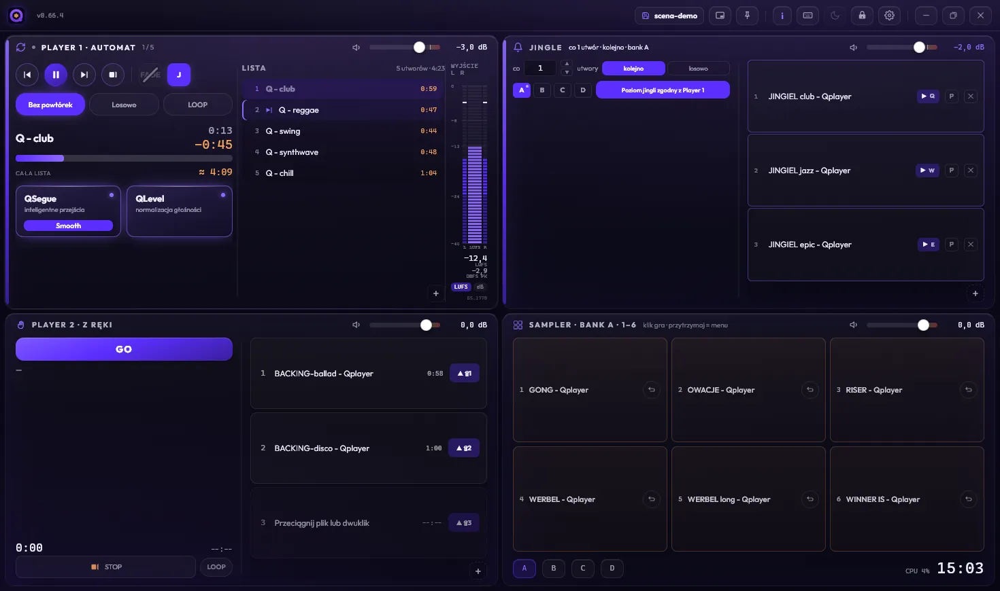
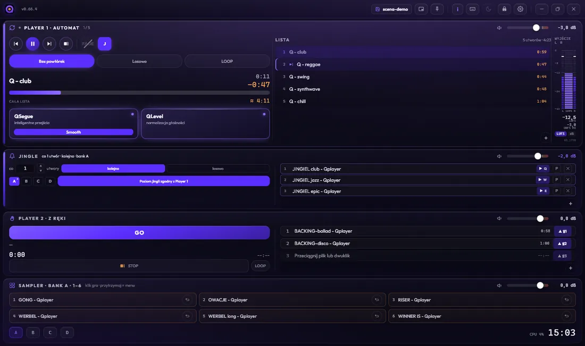
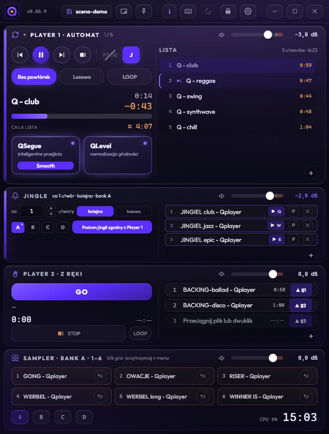
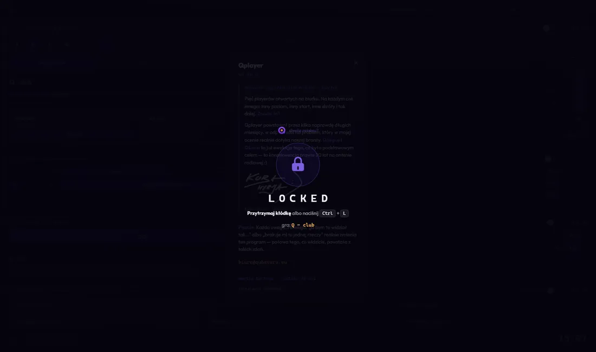

20 lat pracy studyjnej — od nagrań i realizacji singli, epek i albumów po dźwięk, który niesie historię.
Audiobooki, słuchowiska, sound design i mastering w jednym miejscu.
Windows i macOS · gra bez dostępu do sieci · pomiar zgodny z EBU R128



Dość pięciu playerów na biurku, w każdym coś innego.
Qplayer powstał, bo przez kilkanaście lat realizacji na żywo nie znalazłem jednego
programu, który ogarnia cały wieczór. Więc go napisałem — najpierw dla siebie,
na własne eventy.
Kuba Hyrja — Qubatura Group
Dwa autorskie silniki
QSegue
przejścia po granicach muzyki, nie pliku
Każdy automiks odlicza przejście od końca pliku. Ale koniec pliku to nie koniec
muzyki — biblioteki i eksporty z DAW mają na końcu sekundy ciszy. Crossfade wchodzi
w pustkę i brzmi jak awaria, nie jak decyzja realizatora.
QSegue wie, kiedy utwór naprawdę się kończy i od którego miejsca naprawdę się
zaczyna. Bez ustawiania punktów przy każdym kawałku.
Trzy tryby, jeden guzik
Lazy
niedzielny miks. Utwór dostaje chwilę na wybrzmienie, a nowy dźwiga się
do pełni powoli, pod nim. Program płynie, nic nikogo nie popycha.
Smooth
radio na co dzień. Nowy wchodzi pełnią, a poprzedni ustępuje mu szybko,
zamiast dogorywać pod spodem. Bez dziur i bez gęstwiny.
Tight
klubowo. Przejście wypada, gdy utwór gra jeszcze niemal pełnią,
wybrzmienie ścinane niemal natychmiast, następny wchodzi na maksa.
Program stoi gęsto.
Przejścia o stałej energii — bez zapadania głośności w połowie.
QLevel
wszystko gra równo, bez skakania do fadera
Na prawdziwej playliście imprezowej — dwadzieścia współczesnych kawałków
i trzy archiwalne — najgłośniejszy grał −5,00 LUFS, najcichszy
−18,67 LUFS. Między nimi 13,67 dB różnicy.
13,67 dB → 0,00
na 23 utworach · samym tłumieniem · limiter nie włączył się ani razu
Nic nie dociskamy. Utwór brzmi tak, jak go nagrano.
Limiter nigdy nie dostaje więcej niż 3 dB do zrobienia. Gdy brakuje miejsca,
silnik zmniejsza podbicie, zamiast dusić mocniej. Sprawdzone testem
przemiatającym 2500 kombinacji głośności i szczytu.
Trzask z winyla nie blokuje wyrównania. Szczyt liczymy percentylowo,
więc jedno pyknięcie nie ustawia całego utworu — silnik nie zawodzi akurat
na materiale, dla którego powstał.
To nie jest „coś w rodzaju LUFS"
Pomiar wg ITU-R BS.1770 / EBU R128 — ten sam standard,
na którym opiera się radio, telewizja i streaming. Sprawdzony niezależnie:
0,05 LUoffline vs ffmpeg, 16 plików
0,02 LUna żywo vs ton kalibracyjny
0,04 LUna żywo vs ffmpeg, na muzyce
Norma dopuszcza 0,10 LU. Sprawdź Youleanem — zobaczysz to samo.
Cztery sekcje, jeden ekran
Player 1 — automat
Kolejka gra sama, z Twoimi fade'ami.
QSegue i QLevel siedzą w torze.
Jingle
Wchodzą co N utworów, z priorytetami. Sygnał
sponsorski nie przepada — przesuwa się na później.
Player 2 — z ręki
Sloty pod klawiszami. Na czas wejścia
przyciszają Player 1.
Sampler
Sześć padów w banku, cztery banki. Grają
na wierzchu — nic nie przerywają.
Zapisujesz cały wieczór jednym plikiem. Nastawy, kolejki, jingle,
sample. Nazywasz „wesele 22.08" i masz komplet gotowy do odtworzenia.
Żeby o 23:40 nic się nie stało
Muzyka gra z pamięci, nie z dysku. Każdy plik jest zdekodowany przed
odtworzeniem. Uśpiony dysk zewnętrzny nie ma jak przerwać grania.
Blokada ekranu. Nikt nic nie kliknie, a duży napis mówi, co teraz gra —
czytelny z drugiego końca sali.
Licencja nigdy nie przerywa grania. Żadnych okoliczności. Jeśli termin minie
w trakcie imprezy, program gra do końca i odezwie się po zamknięciu.
Gra bez sieci. Na evencie zero łączenia, zero sprawdzania, zero rzeczy,
które mogą się nie udać.
Każda awaria kończy się graniem. Gdy cokolwiek pójdzie nie tak, silnik cofa
się do trybu prostego, zamiast przerwać.

Blokada — nazwa utworu czytelna z drugiego końca sali
Lekki, policzony
Miernik kosztuje 0,19 ms na klatkę. Rdzeń audio nie ma żadnych zewnętrznych
zależności — nic, co mogłoby się samo zaktualizować w środku sezonu. 32 testy
i strażnik, który po każdej zmianie porównuje silnik z wzorcem co do szóstego miejsca
po przecinku.
Qplayer nie jest jeszcze w sprzedaży. Wysyłamy go imiennie
do kilkunastu osób z branży, których zdanie coś dla nas znaczy — i Twoje jest jednym
z nich. Trzydzieści dni, pełna wersja, trzy instalacje — sprawdź go na Macu,
na Windowsie i na tablecie. Bez opłat i bez zobowiązań.
Jak coś Cię wkurzy — napisz. Po to Ci go dajemy.
Wersja0.66.4
SystemyWindows 10/11 · macOS — Apple Silicon i Intel, osobne paczki
Postawiona na czystym JavaScripcie — vanilla, ES modules, bez frameworka i bundlera. Scena 3D na Three.js i własnych shaderach, animacje w GSAP, dźwięk przez Web Audio API, nawigacja SPA na History API. Zero WordPressa, zero gotowych modułów — napisana przez nas od pierwszej linijki. Full custom.
parallaxvanilla JS · ES modulesThree.js · WebGLcustom shaderyzero frameworku · bez bundlerazero WordPressaGSAPSPA · History APIWeb Audio API
Projekt, kod, budowa — zespół Qubatura Lab
Web design, muzyka — Kuba Hyrja · CEO Qubatura Group